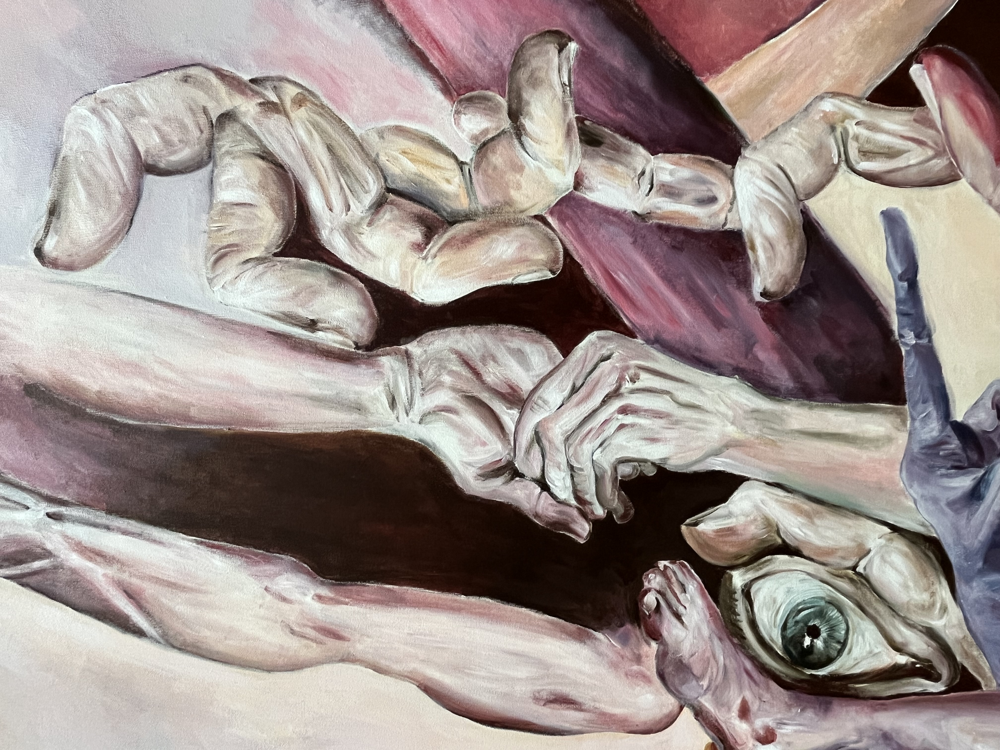
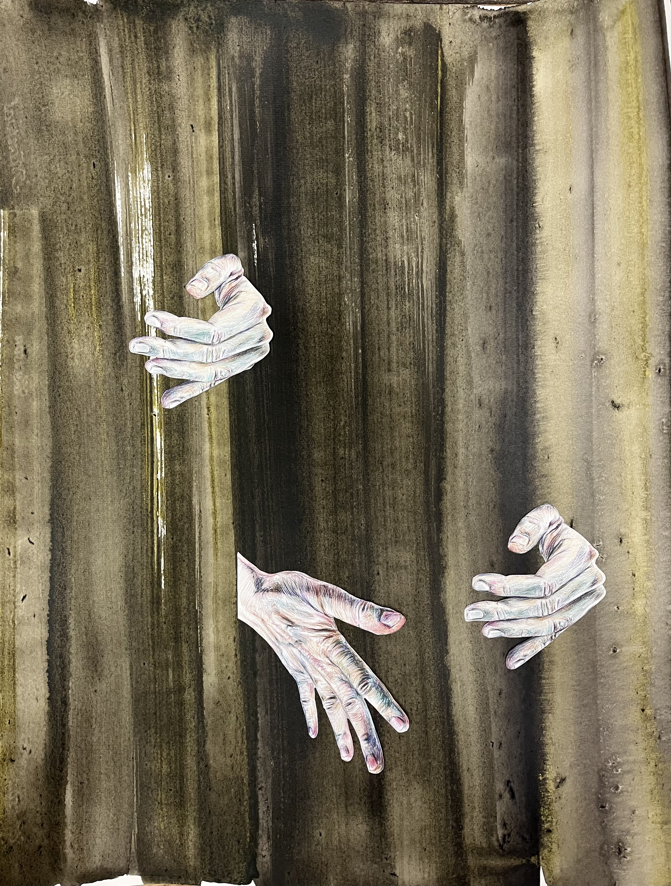

Peintures
Membres en tension.

Collages
Graines d'histoire(s).

Dessins
En corps.

Membres en tension.

Graines d'histoire(s).
En corps.
Patrick Pailler exerce son activité plastique près de Lyon. Il aurait aimé opérer la synthèse entre Géricault, le cinéma bergmanien, la littérature de l’absurde et Métal Hurlant. La tâche était trop rude. Il y a renoncé. Ses œuvres sont le fruit de ce ratage. Voilà ce qu’il en dit :
"Dans mes dessins et peintures, j’explore la figure humaine à travers la fragmentation, la répétition et la recomposition. Corps, membres et visages se déploient dans des espaces indéterminés, hors de toute narration linéaire. Détachées de leur unité anatomique, les formes restent actives et expressives : gestes, regards, bouches instaurent une tension entre violence et intimité.
Le point de départ de ces images se trouve dans des fragments de mon propre corps, photographiés puis redessinés, matière d’un autoportrait démultiplié. Mais au fil du travail, les figures se détachent de toute identité stable : les fragments se recomposent et se mêlent à d’autres corps possibles. Les regards scrutent ou interrogent, les mains désignent, retiennent ou protègent. Certaines compositions prennent la forme de scènes énigmatiques, où gestes, regards, positions des corps laissent apparaître des relations de pouvoir.
Mes collages sur papier ou toile prolongent cette recherche dans une forme plus épurée : des fragments dessinés au stylo, parfois photocopiés, sont découpés et déplacés sur des surfaces travaillées par des lavis d’encre ou d’acrylique, laissant apparaître accidents et réserves. La diffusion imprévisible de l’eau crée des textures mouvantes auxquelles se confronte la précision du dessin. Dans ces images plus ouvertes, l’influence du surréalisme apparaît plus directement. Chaque collage fonctionne alors comme une image brève et suggestive, un point de départ, presque un déclencheur d'histoire."
Fermer ✕
Pour toute demande : pat.pailler@gmail.com